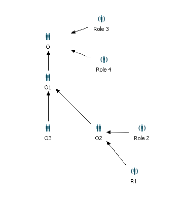
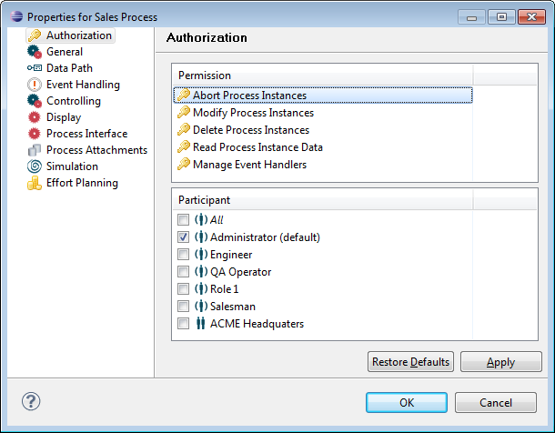
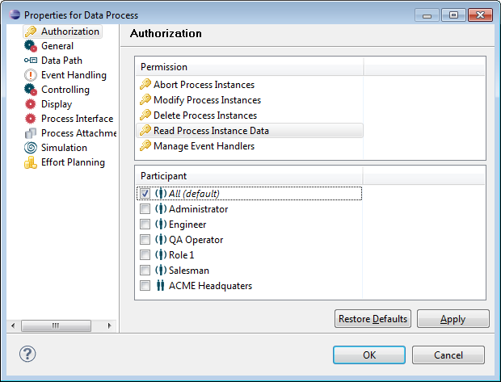
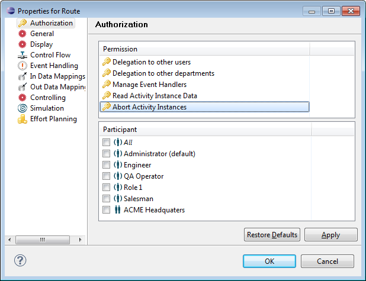
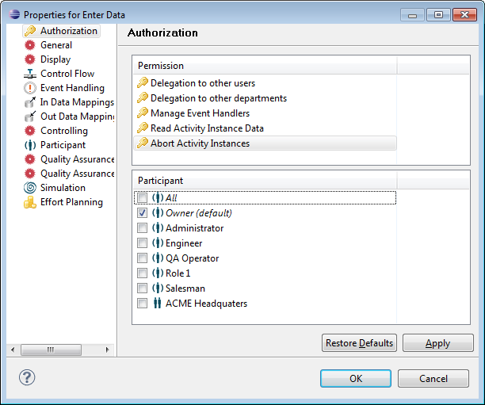

In addition to implicit permissions like:
for the runtime other permissions are specified on model elements and assigned to a role or organization.
These permissions are evaluated for runtime instances of the model elements. Furthermore, read and modification permissions can be specified for model elements themselves. All permissions, even those to access model elements in the modeling environment, can be controlled by assigning users to appropriate roles through the directory service (e.g. LDAP, MS Active Directory, Stardust internal user database). Note, that permissions cannot be assigned to conditional performers.
To get an overview over permissions used in the Stardust Services API, refer to the chapter Declarative Security Usage in Stardust Services API of the Programming Guide.
To make declarative security effective, make sure that the according service guarded property (xxxService.Guarded) is set to true (default value).
Note
It is not recommended to change this property.
Changing the value to false introduces a high risk of
executing services without having a permission and
hence might cause a severe security hole in the deployment!
In case a declarative security grant is modeled for an organization, it is implicitly granted for all users having grants for one or more roles or organizations with the following properties:
For example in the following organizational structure, whenever a declarative security grant is modeled for the organization O1, it will implicitly be granted for all users having grants for organization O3, O2 and the roles Role 2 and R1.

Figure: Example Organizational Structure
The effect of authorization set for scoped participants depends on the model element:
If a grant is given to a scoped participant for a data element, then all users assigned to this participant do have execution permission. The department is not taken into account.
Each activity instance stores the department information. Thus, it depends on the concrete activity instance, if a user has execution permission. In that case, the grant including the department has to match the grant permission and the department of the activity instance.
Department information is not stored in the process instance. Instead, the relevant process data defining the department is evaluated on demand.
For example, a process definition permission is granted to a role Role 1. This role is a scoped role with scope data Data 1 defining the department. If the value of Data 1 is executed for a specific process instance, the department required to get the execution permission is evaluated.
You can set authorization in the property dialogs of the following model elements:
In the Permission part, all permissions possible for the element are listed. Beneath this list, the possible participants for a selected permission are displayed with checkboxes. Possible participants are all roles, organizations, the administrator and the participant pertaining to an activity (Owner). Additionally the All option is provided to give grant to everyone. Grants like Owner and All, not pertaining to specific participants, are displayed cursive.
The permission set by default, is also enabled per default in the dialog. It is marked as default in brackets after the grant name.
To remove permission from all participants, deselect all provided entries.
Note
Be aware that if disabling all permissions and closing the dialog, the
permission is reset to the default permission and persisted again. After
reopening the dialog you notice the default permission selected again.
Please also refer to the section Overwriting default Values of Declarative Security Grants for details on overwriting default values.
To set the authorization in the properties dialog of an element:
If no participant is selected, the permission is given to the default participant provided for this action. The administrator is always granted, regardless of the grants set for the authorization property.

Figure: Setting the Authorization in the Property Page.
The process definition property pages provide the following permissions:
| Permission | Default Participant | Description |
|---|---|---|
| Abort Process Instances | Administrator | Gives permission to abort the process instance through Administration perspective and APIs. |
| Modify Process Instances | Administrator | Gives permission to modify processes (e.g. priorities) through Business Control Center perspective and APIs. |
| Delete Process Instances | Administrator | Gives permission to delete processes through Administration perspective and APIs. |
| Read Process Instance Data | All |
|
| Manage Event Handlers | Administrator | Gives permission to manipulate and trigger processes through Administration perspective and APIs. |

Figure: Setting the Authorization for a Process
Definition.
The activity property pages provide the following permissions:
| Permission | Default Participant | Description |
|---|---|---|
| Delegation to other users | All | Gives permission to delegate to participant, default performer and user. It also gives permission to suspend an activity through Stardust Portal and APIs. |
| Delegation to other departments | Administrator | Gives permission to delegate an activity to other departments through Stardust Portal and APIs. |
| Manage Event Handlers | All | Gives permission to manipulate and trigger the event handler. |
| Read Activity Instance Data | All |
|
| Abort Activity Instances | Administrator | Gives permission to abort an activity instance through Stardust Portal and APIs. |
Please note that additionally to the participant given the permission for aborting activity instances, the administrator always has the right to abort.

Figure: Setting the Authorization for a non-interactive
Activity.
The entitlement Delegation to other departments allows the user to delegate work from one department to another.
To determine if an activity delegation succeeds with the "Delegation to other users" permission, or requires the "Delegation to other departments" permission, depends on the following cases. In case the input for delegation is:
then the delegation permissions needed are:
Interactive activities additionally can have the grant Owner, which represents the participant associated with the activity. This is useful for example to restrict the abort functionality for subprocess activities. Thus it can be avoided that subprocess activities are aborted and as a consequence the whole process is terminated.
If the activity instance is in the participant worklist of a scoped participant, the Owner grant is extended to the worklist visibilities. The participant and department of the activity will then have to match with the logged-in user in order to allow the action.
The property pages for interactive activities provide the following permissions and default participant settings:
| Permission | Default Participant | Description |
|---|---|---|
| Delegation to other users | All | Gives permission to delegate to participant, default performer and user. It also gives permission to suspend an activity through Stardust Portal and APIs. |
| Delegation to other departments | Administrator | Gives permission to delegate an activity to other departments through Stardust Portal and APIs. |
| Manage Event Handlers | All | Gives permission to manipulate and trigger the event handler. |
| Read Activity Instance Data | All |
|
| Abort Activity Instances | Owner | Gives permission to abort an activity instance through Stardust Portal and APIs. |
Please note that additionally to the participant given the permission for aborting activity instances, the administrator always has the right to abort.

Figure: Setting the Authorization for an interactive
Activity.
Please refer to chapter Setting Application Permissions of chapter Securing the Stardust Engine in the Operation Guide for information on how to use service operations provided by Stardust to set permissions.
The permissions will be evaluated at modeling and runtime and will be granted or rejected according to the following two categories:
Permissions for logged-in users can be retrieved at runtime for all services via the following specific service operation:
List getPermissions()
These permissions might be used to control for example enabling or disabling of GUI controls. Please refer to the chapter Retrieving and Using Permission States of the Programming Guide for detailed information on permission retrieval via API.
Declarative grant default values are configurable at runtime by setting the following configuration parameters in your server-side carnot.properties file:
This allows to overwrite the default values (empty value, OWNER) of the declarative grants for activity instance abortion and process instance abortion respectively. As values you can set the ID of a role or organization pertaining to the process model or a predefined meta role like ALL or OWNER. The value can contain a comma-separated list. Note that no whitespaces like spaces or tabs are allowed between the listed items.
For example, setting
StardustBpm.Engine.Authorization.DefaultPermissions.ActivityInstance.Abort = Engineer,Developer
will change the grant of the Abort Activity Instance to the roles with ID Engineer and Developer.
Setting
StardustBpm.Engine.Authorization.DefaultPermissions.ProcessInstance.Abort = ALL
would change the grant of Abort Process Instance to all model roles and organizations.